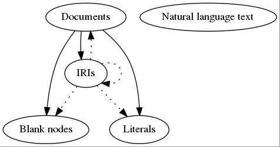

The Web of Data: Closed or Open?
March 18th, 2016
Wouter Beek (wouter@triply.cc)

Problem 1
Not everyone has been able to publish something yet
Why does not everyone publish on the SW?
Metcalfe's Law
The value of a network is proportional to the square of the number of connected nodes
So... how many connected nodes are there?
Most nodes have low availability
Most nodes enforce restrictions
Growth is linear
Why?
No Allocative Efficiency
What the consumer pays should equal the marginal cost of production
Beek et al. “LOD Laundromat: Why the Semantic Web Needs Centralization (Even If We Don't Like It)” IEEE Internet Computing 20 (2) p.78-81, 2016
Problem 2
Not everything that is published can also be accessed
AAA
Anyone can say anything about anything
Authority
IRI <auth:London> dereferences to auth's view on Lodon
What if a search for “U.S. foreign policy” would only show results published by the White House?
AAA
Even though everyone can say anything about anything, very few people are actually heard
But we can travel the graph, right?
“Follow your nose”
Fixing “Follow your nose”

LOD Laundromat


 Beek & Rietveld & Bazoobandi & Wielemaker & Schlobach “LOD laundromat: A Uniform Way of Publishing Other People’s Dirty Data” ISWC 2014
Beek & Rietveld & Bazoobandi & Wielemaker & Schlobach “LOD laundromat: A Uniform Way of Publishing Other People’s Dirty Data” ISWC 2014
Semantic Web Layer Cake

LOD Laundromat Layer Cake
 Rietveld & Verborgh & Beek & Vander Sande & Schlobach, “Linked Data-as-a-Service: The Semantic Web Redeployed” ESWC 2015
Rietveld & Verborgh & Beek & Vander Sande & Schlobach, “Linked Data-as-a-Service: The Semantic Web Redeployed” ESWC 2015
Frank
Federated Resource Architecture for Networked Knowledge
 W. Beek & L. Rietveld. “Frank: The LOD Cloud at your Fingertips” Extended Semantic Web Conference: Developers Workshop, 2015.
W. Beek & L. Rietveld. “Frank: The LOD Cloud at your Fingertips” Extended Semantic Web Conference: Developers Workshop, 2015.
 http://lodlaundromat.org/lodlab
http://lodlaundromat.org/lodlab
Rietveld & Beek & Schlobach “LOD Lab: Experiments at LOD Scale” International Semantic Web Conference 2015 (Best Paper Award)
Problem 3
Anyone can say anything, but not everyone is a logician
bbc:sameAs
bbc:sameAs
owl:sameAs
?
AAA⋆
Anyone can say that anything is identical to anything else
Leibniz's Law
$$a = b \leftrightarrow (\forall \phi \in \Psi)(\phi(a) = \phi(b))$$
Relatedness cannot replace identity
[exactMatch] is used to link two concepts, indicating a high degree of confidence that the concepts can be used interchangeably across a wide range of information retrieval applications.From the SKOS standard
Problem 4
If you do not know SPARQL then you cannot tap into today's SW

Fixing the NatLang interface
- Efficient computation through canonicity
- Data enrichment by improved instance matching
- User eXperience: language preference, “value labeling”
- Improve NLP tasks with background knowledge
Ilievski & Beek & Van Erp & Rietveld & Schlobach “Literally Better: Analyzing and Improving the Quality of Literals” European Semantic Web Conference 2016 Beek & Ilievski & Debattista & Schlobach “Literally Better: Analyzing and Improving the Quality of Literals” Semantic Web Journal 2016 (under submission)
LOTUS

Datatypes

Language tags